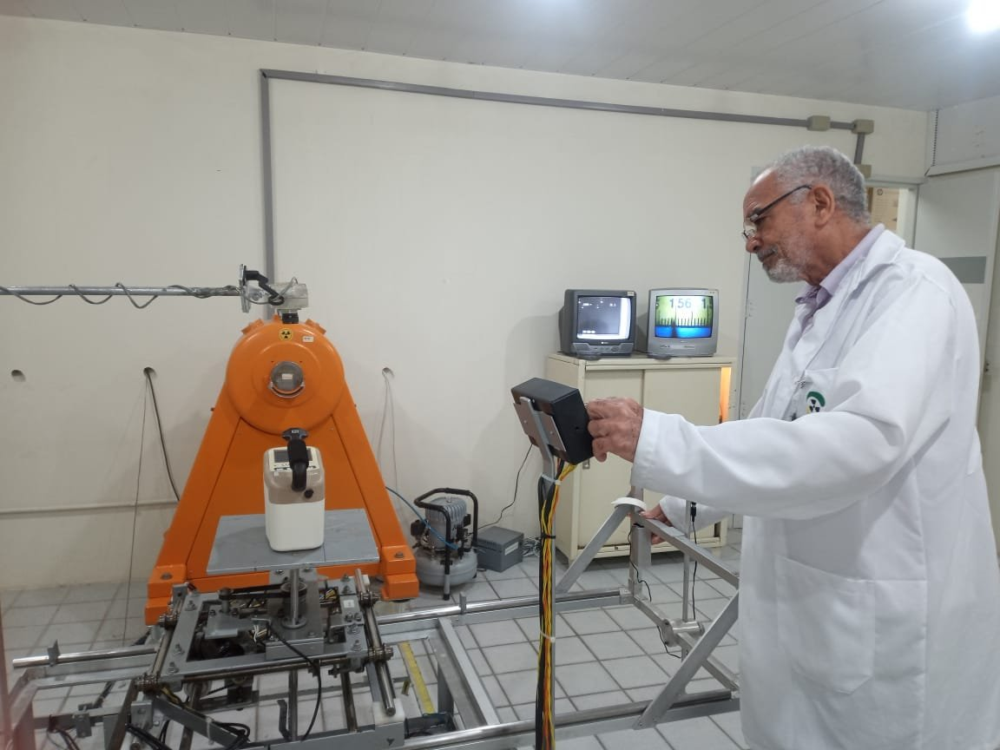
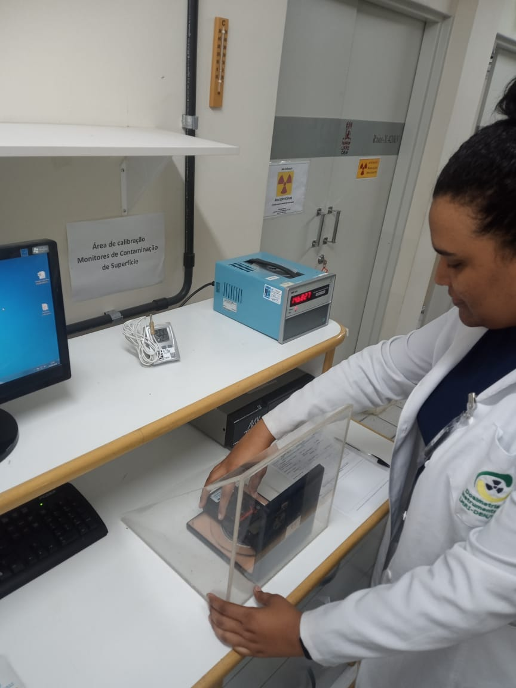

Radioproteção
- Alarmes pessoais PA
- Canetas dosimétricas CD
- Monitores de área GM
- Monitores de contaminação de superfície CS
Laboratório do Departamento de Energia Nuclear da UFPE
 Site do GDOIN
Site do GDOIN

O Laboratório de Metrologia das Radiações Ionizantes calibra monitores de radioproteção, dosímetros e sistemas de medida de radiodiagnóstico desde 1997, no Departamento de Energia Nuclear da UFPE.

Cada calibração do LMRI se apoia em um padrão de referência calibrado pelo laboratório nacional. É isso que torna a medida do seu instrumento comparável em qualquer lugar.
LNMRI, IRD/CNEN
Laboratório Nacional de Metrologia das Radiações Ionizantes, no Rio de Janeiro. Calibra o padrão de referência do LMRI em feixes de Cs-137 e Co-60.
LMRI, DEN/UFPE
Eletrômetro PTW UNIDOS E com câmara de ionização PTW TW32002. Certificado LNMRI 0601/2022, de 16 de agosto de 2022.
Ver o certificado (PDF, 1,6 MB)Sua empresa
Calibrado no LMRI por comparação com o padrão de referência. Você recebe o certificado de calibração pela área do cliente.
Indústrias, hospitais, clínicas e universidades de todo o país enviam seus instrumentos ao laboratório.

Algumas das empresas e instituições que calibram seus instrumentos no LMRI.


Acompanhe suas solicitações e baixe os certificados na área do cliente.